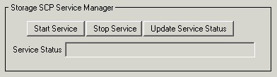

You can start and stop the Storage SCP service from within the DICOM Network Services utility. You will typically use the Storage SCP Service Manager after making changes to the Storage SCP Service configuration, or before performing a retrieve operation if you did not select to have the service automatically started at boot time.
Manage the service status from the Storage SCP Service Manager area of the Configuration tab of the DICOM Network Services utility. From this area, you can do the following:
| • | Start Service — click this button to start the service. |
| • | Stop Service — click this button to stop the service. |
| • | Update Service Status — click this button to verify the current status of the service. Inquiry results are printed in the Status area. |
|
 |
Note: To avoid potential problems, only start a single Storage SCP Service per machine.
Note: The current Storage SCP Service recognizes and uses the most recently installed version of IDL. Attempting to access the Storage SCP Service with a previous version of IDL will be problematic and is not recommended.